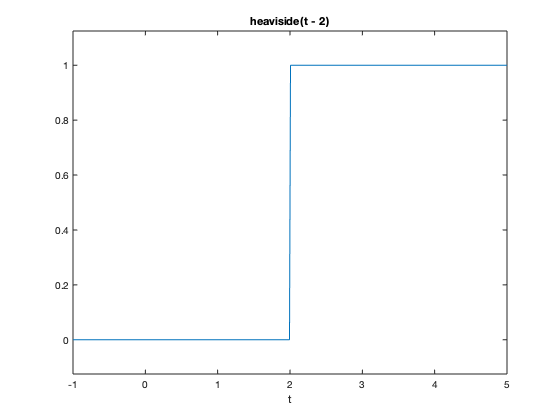
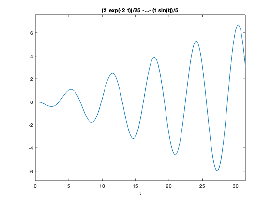
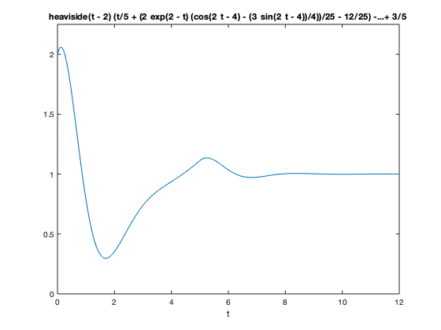

Laplace Transform Lab: Solving ODEs using Laplace Transform in MATLAB
This lab will teach you to solve ODEs using a built in MATLAB Laplace transform function laplace. Also in this lab, you will write your own ODE solver using Laplace transforms and check whether the result yields the correct answer.
You will learn how to use the laplace routine.
There are five (5) exercises in this lab that are to be handed in. Write your solutions in the template, including appropriate descriptions in each step. Save the m-file and submit it on Quercus.
Include your name and student number in the submitted file.
MAT292, Fall 2019, Stinchcombe & Parsch, modified from MAT292, Fall 2018, Stinchcombe & Khovanskii, modified from MAT292, Fall 2017, Stinchcombe & Sinnamon, modified from MAT292, Fall 2015, Sousa, based on MAT292, Fall 2013, Sinnamon & Sousa
Contents
Student Information
Student Name: Michael Boyadjian
Student Number: 1005109142
Using symbolic variables to define functions
Recall the use of symbolic variables and function explained in the MATLAB assignment #2.
syms t s x y f = cos(t) h = exp(2*x)
f = cos(t) h = exp(2*x)
Laplace transform and its inverse
% The routine |laplace| computes the Laplace transform of a function
F=laplace(f)
F = s/(s^2 + 1)
By default it uses the variable s for the Laplace transform But we can specify which variable we want:
H=laplace(h) laplace(h,y) % Observe that the results are identical: one in the variable |s| and the % other in the variable |y|
H = 1/(s - 2) ans = 1/(y - 2)
We can also specify which variable to use to compute the Laplace transform:
j = exp(x*t) laplace(j) laplace(j,x,s) % By default, MATLAB assumes that the Laplace transform is to be computed % using the variable |t|, unless we specify that we should use the variable % |x|
j = exp(t*x) ans = 1/(s - x) ans = 1/(s - t)
We can also use inline functions with laplace. When using inline functions, we always have to specify the variable of the function.
l = @(t) t^2+t+1 laplace(l(t))
l =
function_handle with value:
@(t)t^2+t+1
ans =
(s + 1)/s^2 + 2/s^3
MATLAB also has the routine ilaplace to compute the inverse Laplace transform
ilaplace(F) ilaplace(H) ilaplace(laplace(f))
ans = cos(t) ans = exp(2*t) ans = cos(t)
If laplace cannot compute the Laplace transform, it returns an unevaluated call.
g = 1/sqrt(t^2+1) G = laplace(g)
g = 1/(t^2 + 1)^(1/2) G = laplace(1/(t^2 + 1)^(1/2), t, s)
But MATLAB "knows" that it is supposed to be a Laplace transform of a function. So if we compute the inverse Laplace transform, we obtain the original function
ilaplace(G)
ans = 1/(t^2 + 1)^(1/2)
The Laplace transform of a function is related to the Laplace transform of its derivative:
syms g(t)
laplace(diff(g,t),t,s)
ans = s*laplace(g(t), t, s) - g(0)
Exercise 1
Objective: Compute the Laplace transform and use it to show that MATLAB 'knows' some of its properties.
Details:
(a) Define the function f(t)=exp(2t)*t^3, and compute its Laplace transform F(s). (b) Find a function f(t) such that its Laplace transform is (s - 1)*(s - 2))/(s*(s + 2)*(s - 3) (c) Show that MATLAB 'knows' that if F(s) is the Laplace transform of f(t), then the Laplace transform of exp(at)f(t) is F(s-a)
(in your answer, explain part (c) using comments).
Observe that MATLAB splits the rational function automatically when solving the inverse Laplace transform.
close all; clear; clc; syms t s x % a) f = @(t) exp(2*t)*t^3; F = laplace(f(t)); disp(F) % b) G = @(s) ((s-1)*(s-2))/(s*(s+2)*(s-3)); g = ilaplace(G(s)); disp(g) % c) syms a f(t) F1 = laplace(f(t)); F2 = laplace(exp(a*t) * f(t)); disp(F1) disp(F2) % As shown from the outputs generated with the above code, MATLAB evaluates % the laplace tranform of f(t) to be F(s) and the laplace transform of % exp(a*t) * f(t) to be F(s-a)
6/(s - 2)^4 (6*exp(-2*t))/5 + (2*exp(3*t))/15 - 1/3 laplace(f(t), t, s) laplace(f(t), t, s - a)
Heaviside and Dirac functions
These two functions are builtin to MATLAB: heaviside is the Heaviside function u_0(t) at 0
To define u_2(t), we need to write
f=heaviside(t-2); ezplot(f,[-1,5]); % The Dirac delta function (at |0|) is also defined with the routine |dirac| g = dirac(t-3); % MATLAB "knows" how to compute the Laplace transform of these functions laplace(f) laplace(g)
ans = exp(-2*s)/s ans = exp(-3*s)
Exercise 2
Objective: Find a formula comparing the Laplace transform of a translation of f(t) by t-a with the Laplace transform of f(t)
Details:
- Give a value to a
- Let G(s) be the Laplace transform of g(t)=u_a(t)f(t-a) and F(s) is the Laplace transform of f(t), then find a formula relating G(s) and F(s)
In your answer, explain the 'proof' using comments.
syms t f g F G; % Using an a value of 3 and f(t) = t^2 a = 3; f = t^2; % Laplace of f F = laplace(f); % g = f(t-a) g = f; g = simplify(subs(g, t, t-a)); % laplace transform of u(t-a) * g G = laplace(heaviside(t - a) * g); disp(F) disp(G) % The outputs show that G is just e^(-3s)*F, where 3 is in fact the a value % we assigned. This means that G = e^(-as)*F, which proves to us that the % laplace transmorm of u(t-a)*f(t-a) is equal to the laplace transform % of f(t) multiplied by e^(-as)
2/s^3 (2*exp(-3*s))/s^3
Solving IVPs using Laplace transforms
Consider the following IVP, y''-3y = 5t with the initial conditions y(0)=1 and y'(0)=2. We can use MATLAB to solve this problem using Laplace transforms:
% First we define the unknown function and its variable and the Laplace % tranform of the unknown syms y(t) t Y s % Then we define the ODE ODE=diff(y(t),t,2)-3*y(t)-5*t == 0 % Now we compute the Laplace transform of the ODE. L_ODE = laplace(ODE) % Use the initial conditions L_ODE=subs(L_ODE,y(0),1) L_ODE=subs(L_ODE,subs(diff(y(t), t), t, 0),2) % We then need to factor out the Laplace transform of |y(t)| L_ODE = subs(L_ODE,laplace(y(t), t, s), Y) Y=solve(L_ODE,Y) % We now need to use the inverse Laplace transform to obtain the solution % to the original IVP y = ilaplace(Y) % We can plot the solution ezplot(y,[0,20]) % We can check that this is indeed the solution diff(y,t,2)-3*y
ODE = diff(y(t), t, t) - 3*y(t) - 5*t == 0 L_ODE = s^2*laplace(y(t), t, s) - s*y(0) - subs(diff(y(t), t), t, 0) - 5/s^2 - 3*laplace(y(t), t, s) == 0 L_ODE = s^2*laplace(y(t), t, s) - s - subs(diff(y(t), t), t, 0) - 5/s^2 - 3*laplace(y(t), t, s) == 0 L_ODE = s^2*laplace(y(t), t, s) - s - 5/s^2 - 3*laplace(y(t), t, s) - 2 == 0 L_ODE = Y*s^2 - s - 3*Y - 5/s^2 - 2 == 0 Y = (s + 5/s^2 + 2)/(s^2 - 3) y = cosh(3^(1/2)*t) - (5*t)/3 + (11*3^(1/2)*sinh(3^(1/2)*t))/9 ans = 5*t
Exercise 3
Objective: Solve an IVP using the Laplace transform
Details: Explain your steps using comments
- Solve the IVP
- y'''+2y''+y'+2*y=-cos(t)
- y(0)=0, y'(0)=0, and y''(0)=0
- for t in [0,10*pi]
- Is there an initial condition for which y remains bounded as t goes to infinity? If so, find it.
syms y(t) t Y s % Define differentiated terms in ODE yprime3 = diff(y(t), t, 3); yprime2 = diff(y(t), t, 2); yprime1 = diff(y(t), t, 1); % Define ODE ODE = yprime3 + 2*yprime2 + yprime1 + 2*y(t) == -cos(t); % Initial conditions y0 = 0; yprime1_0 = 0; yprime2_0 = 0; % Finding laplace transform using the initial conditions L_ODE = laplace(ODE); L_ODE = subs(L_ODE, y(0), y0); L_ODE = subs(L_ODE, subs(yprime1, t, 0), yprime1_0); L_ODE = subs(L_ODE, subs(yprime2, t, 0), yprime2_0); % Factor out Y L_ODE = subs(L_ODE, laplace(y(t), t, s), Y); Y = solve(L_ODE, Y); % Solve the ODE using the laplace inverse y = ilaplace(Y); % Plotting the solution ezplot(y, [0, 10*pi]) % There is no initial condition that is able to bound y. The solution will % always diverge to infinity. The general solution: y = Aexp(-2t) + Bsin(t) % + Ccos(t) - 1/5tsin(t) + 1/10tcos(t) shows us that regardless of the % constants, it will always diverge
Exercise 4
Objective: Solve an IVP using the Laplace transform
Details:
- Define
- g(t) = 3 if 0 < t < 2
- g(t) = t+1 if 2 < t < 5
- g(t) = 5 if t > 5
- Solve the IVP
- y''+2y'+5y=g(t)
- y(0)=2 and y'(0)=1
- Plot the solution for t in [0,12] and y in [0,2.25].
In your answer, explain your steps using comments.
syms y(t) t Y s % Inline function - g(t) simplified using heaviside function g = @(t) 3*heaviside(t) + (t-2) * heaviside(t-2) + (-t+4) * heaviside(t-5); % Define differentiated terms in ODE yprime2 = diff(y(t), t, 2); yprime1 = diff(y(t), t, 1); % Define ODE ODE = yprime2 + 2 * yprime1 + 5 * y(t) == g(t); % Initial conditions y0 = 2; yprime1_0 = 1; % Finding laplace transform using the initial conditions L_ODE = laplace(ODE); L_ODE = subs(L_ODE, y(0), y0); L_ODE = subs(L_ODE, subs(yprime1, t, 0), yprime1_0); % Factoring out Y L_ODE = subs(L_ODE, laplace(y(t), t, s), Y); Y = solve(L_ODE, Y); % Solve the ODE using the laplace inverse y = ilaplace(Y); % Plot solution ezplot(y, [0, 12, 0, 2.25]);
Exercise 5a
Objective: Use the Laplace transform to solve an integral equation
Verify that MATLAB knowns about the convolution theorem by explaining why the following transform is computed correctly.
syms t tau y(tau) s I=int(exp(-2*(t-tau))*y(tau),tau,0,t) laplace(I,t,s) % The laplace transform of f*y = int(f(t-tau)y(tau)dtau) from 0 to t is % F(s)*Y(s). In this case f(t) is e^(-2t) and its laplace transform is a % 1/(s+2). The MATLAB output was laplace(y) / s+2, which is in fact % F(s)*Y(s) as expected
I = int(exp(2*tau - 2*t)*y(tau), tau, 0, t) ans = laplace(y(t), t, s)/(s + 2)
Exercise 5b
A particular machine in a factory fails randomly and needs to be replaced. Suppose that the times t>=0 between failures are independent and identically distributed with probability density function f(t). The mean number of failures m(t) at time t satisfies the renewal equation m(t) = \int_0^t [1+m(t-tau)] f(tau) dtau
Details:
- Explain why the mean number of failures satisfies this intergal equation. Note that m(0)=0.
- Solve the renewal equation for m(t) using MATLAB symbolic computation in the cases of i) exponential failure times f(t) = exp(-t) and ii) gamma-distributed failure times f(t) = t^k/(k-1)! exp(-t) for natural number k. Why does MATLAB have difficulty with the calculation for k>=5?
- Verify the elementary renewal theorem: m(t)/t approaches the reciprocal of the mean of f(t) as t goes to infinity.
% Since there are no failures prior to t=0, we have the initial condition % of m(0)=0. m(t) = \int_{0}^{T} x f(tau) dtau, where f(tau) is the % probability density function. Thus, m(T) gives us the expected values of % failures and x is the number of failures between tau and T. The expected % number of failures in this interval [tau, T] is m(T-tau), but a failure % occurs at t = tau, so the number of failures becomes m(T-tau)+1. % Therefore, m(T) = \int_{0}^{T} [m(T-tau)+1]*[f(tau)] dtau syms f(t) m1(t) m2(t) t tau M1 M2 % i) For exponential failure f = exp(-t); % Define renewal equation and take laplace transform r = m1(t) - int((m1(t - tau) + 1) * subs(f, t, tau), tau, 0, t) == 0; R = laplace(r); % Substituting and solve for M R = subs(R, laplace(m1), M1); M1 = solve(R, M1); % Use laplace inverse to extract m m1 = ilaplace(M1) % Verify renewal theorem by finding avg. as t -> infinity average = eval(int(t * f, t, 0, inf)); % According to the theorem, the result should be 1; this correctly checks out res = subs(m1 / t, t, inf) * average % m(t) = t, so m(t)/t = 1 % ii) Gamma Distribution for the case k=5 k = 5; f = t^(k-1)/factorial(k-1) * exp(-t); % Same steps as before but now with Gamma distrubution r = m2(t) == int((m2(t - tau) + 1) * subs(f, t, tau), tau, 0, t); R = simplify(laplace(r)); R = simplify(subs(R, laplace(m2), M2)); M2 = simplify(solve(R, M2)); m2 = vpa(ilaplace(M2)) % Verify renewal theorem by finding avg. as t -> infinity average = eval(int(t * f, t, 0, inf)); % According to the theorem, the result should be 1; this correctly checks out % Note: instead of infinity 1e100 was used here res = subs(m2 / t, t, 1e100) * average % When k>=5, the computation becomes much slower, so it becomes much more % difficult for the calculations. The solution of this problem involves % using partial fractions for the laplace inverse. As k increases, the % order of the denominator increases as well, so it becomes costly time % wise for MATLAB.
m1 = t res = 1 m2 = 0.2*t + exp(-1.8090169943749474241022934171828*t)*cos(0.58778525229247312916870595463907*t)*(0.1 + 0.032491969623290632615587141221513i) + exp(-1.8090169943749474241022934171828*t)*cos(0.58778525229247312916870595463907*t)*(0.1 - 0.032491969623290632615587141221513i) + exp(-1.8090169943749474241022934171828*t)*sin(0.58778525229247312916870595463907*t)*(0.032491969623290632615587141221513 - 0.1i) + exp(-1.8090169943749474241022934171828*t)*sin(0.58778525229247312916870595463907*t)*(0.032491969623290632615587141221513 + 0.1i) + exp(-0.69098300562505257589770658281718*t)*cos(0.95105651629515357211643933337938*t)*(0.1 + 0.13763819204711735382072095819109i) + exp(-0.69098300562505257589770658281718*t)*cos(0.95105651629515357211643933337938*t)*(0.1 - 0.13763819204711735382072095819109i) + exp(-0.69098300562505257589770658281718*t)*sin(0.95105651629515357211643933337938*t)*(0.13763819204711735382072095819109 - 0.1i) + exp(-0.69098300562505257589770658281718*t)*sin(0.95105651629515357211643933337938*t)*(0.13763819204711735382072095819109 + 0.1i) - 0.4 res = 1.0